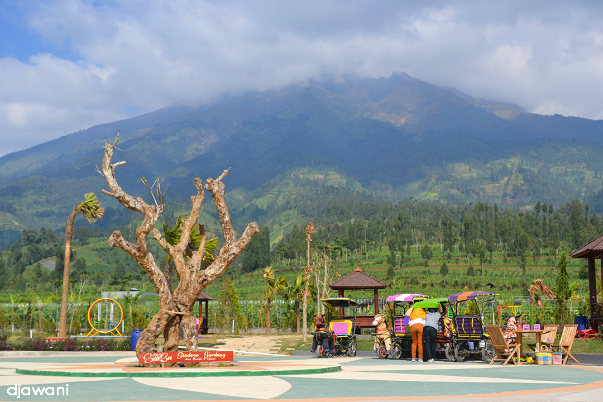
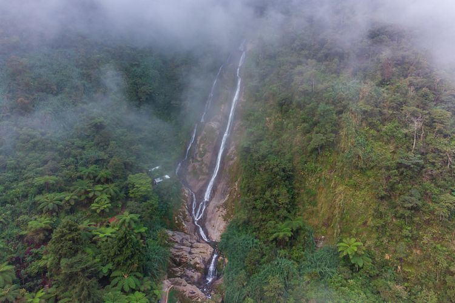
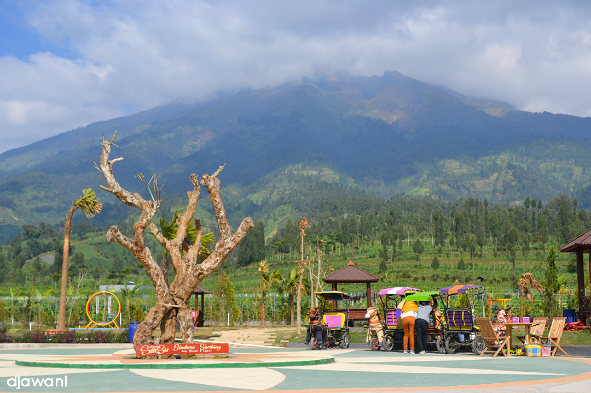
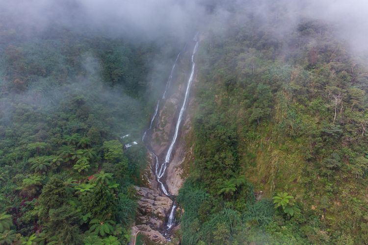

Telaga Bedakah
Wonosobo menjadi destinasi yang selalu berhasil memikat wisatawan. Pasalnya, daerah ini menyimpan pesona alam yang begitu indah. Salah satunya yang bisa kamu temukan adalah Telaga Bedakah. Berlokasi di antara Kebun Teh Tambi di Kecamatan Kertek Wonosobo, Telaga Bedakah memiliki suasana yang sejuk dan menenangkan. Apalagi, ditambah dengan pemandangan alamnya indah. Bikin betah berlama-lama, deh.
Telaga Menjer
Telaga Menjer terletak di Desa Maron, Kecamatan Garung, Kabupaten Wonosobo, Jawa Tengah. Telaga Menjer merupakan tempat wisata dengan pemandangan danau dan bentang Gunung Sindoro. Ada sejumlah aktivitas wisata yang dapat dilakukan di Telaga Menjer. Terdapat floating garden yang dapat dimanfaatkan untuk selfie di tengah telaga dengan pemandangan telaga dan bentang Gunung Sindoro yang mempesona.

Gunung Prau
Gunung Prau terletak di kawasan dataran tinggi Dieng, Kabupaten Wonosobo, Desa Patakbanteng dengan ketinggian 2.565 Mpdl. Dengan jalur pendakian yang relatif mudah dan cukup jelas bagi para pendaki serta view yang istimewa menjadikan Gunung Prau menjadi gunung favorit bagi para pendaki saat ini. Gunung juga dapat dijadikan pilihan tempat untuk anda menikmati indahnya sunset maupun sunrise.

 


